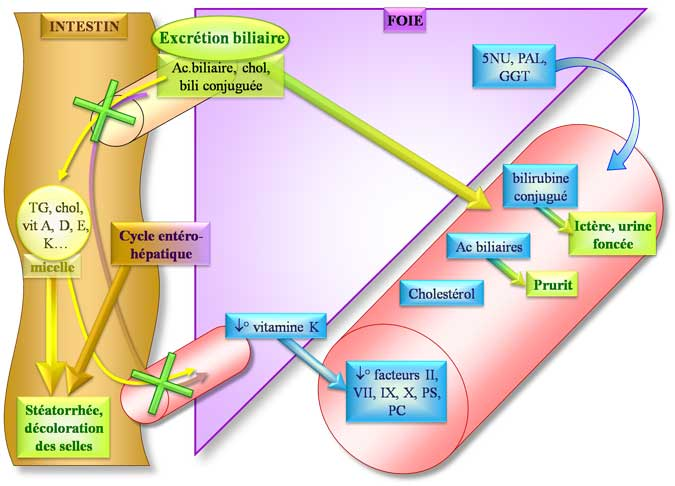

La cholestase correspond à un défaut d’élimination biliaire.
Elle est responsable d’ictère (ictère à bilirubine conjuguée) et d’une coloration brune des urines. Les taux sanguins de bilirubine conjuguée peuvent être normaux en cas de cholestase anictérique.
Ils sont responsables d’un prurit (par histamino-libération).
Les acides
biliaires totaux peuvent être dosés principalement chez la femme enceinte
pour diagnostiquer la cholestase par compression des voies biliaires par le
fœtus)
- augmentation des taux de cholestérol
Elle est responsable d’une absence de coloration des selles
Elle provoque une diminution de l’absorption des molécules lipophiles :
Le défaut d’absorption de vitamine K va être responsable d’une diminution des facteurs de la coagulation vitamine K dépendant : facteurs II, VII, IX, X (diminution du TP) ainsi que des inhibiteurs de la coagulation vitamine K dépendant : protéine C, protéine S.
Le défaut d’absorption des lipides est responsable de stéatorrhée.
Les 3 enzymes le plus souvent associées à un syndrome
cholestatique sont :
Elle est moins sensible mais plus spécifique que les PAL et les GGT
Elles ont 2 origines principales : le foie et le tissu osseux (augmentation à partir du 2ème trimestre de grossesse et au cours de la croissance)
Elles sont augmentées dans la plupart des pathologies hépatiques